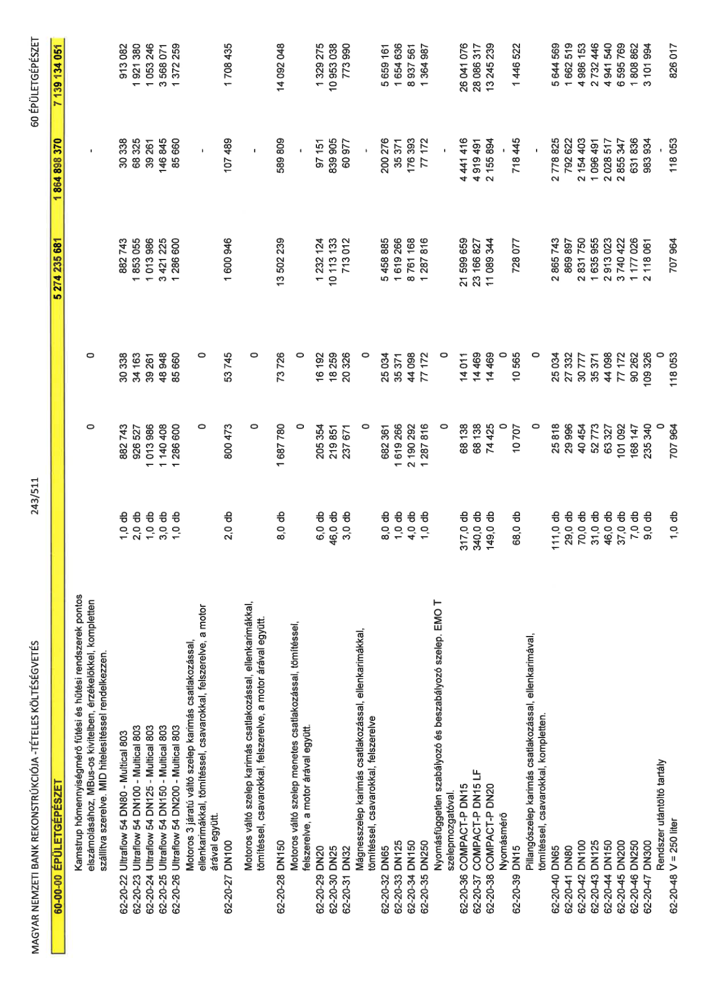

| Tétel | Menny. | Egys. | Anyag e.ár (net HUF) | Díj e.ár (net HUF) | Anyag összesen (net HUF) | Díj összesen (net HUF) | Anyag+Díj összesen (net HUF) |
|---|---|---|---|---|---|---|---|
| Kamstrup hőmennyiségmérő fűtési és hűtési rendszerek pontos elszámolásához, MBus-os kivitelben, érzékelőkkel, kompletten szállítva szerelve. MID hitelesítéssel rendelkezzen. | 0 | 0 | 0 | 0 | 0 | 0 | 0 |
| 62-20-22 Ultraflow 54 DN80 - Multical 803 | 1,0 | db | 882 743 | 30 338 | 882 743 | 30 338 | 913 082 |
| 62-20-23 Ultraflow 54 DN100 - Multical 803 | 2,0 | db | 926 527 | 34 163 | 1 853 055 | 68 325 | 1 921 380 |
| 62-20-24 Ultraflow 54 DN125 - Multical 803 | 1,0 | db | 1 013 986 | 39 261 | 1 013 986 | 39 261 | 1 053 246 |
| 62-20-25 Ultraflow 54 DN150 - Multical 803 | 3,0 | db | 1 140 408 | 48 948 | 3 421 225 | 146 845 | 3 568 071 |
| 62-20-26 Ultraflow 54 DN200 - Multical 803 | 1,0 | db | 1 286 600 | 85 660 | 1 286 600 | 85 660 | 1 372 259 |
| Motoros 3 járatú váltó szelep karimás csatlakozással, ellenkarimákkal, tömítéssel, csavarokkal, felszerelve, a motor árával együtt. | 0 | 0 | 0 | 0 | 0 | 0 | 0 |
| 62-20-27 DN100 | 2,0 | db | 800 473 | 53 745 | 1 600 946 | 107 489 | 1 708 435 |
| Motoros váltó szelep karimás csatlakozással, ellenkarimákkal, tömítéssel, csavarokkal, felszerelve, a motor árával együtt. | 0 | 0 | 0 | 0 | 0 | 0 | 0 |
| 62-20-28 DN150 | 8,0 | db | 1 687 780 | 73 726 | 13 502 239 | 589 809 | 14 092 048 |
| Motoros váltó szelep menetes csatlakozással, tömítéssel, felszerelve, a motor árával együtt. | 0 | 0 | 0 | 0 | 0 | 0 | 0 |
| 62-20-29 DN20 | 6,0 | db | 205 354 | 16 192 | 1 232 124 | 97 151 | 1 329 275 |
| 62-20-30 DN25 | 46,0 | db | 219 851 | 18 259 | 10 113 133 | 839 905 | 10 953 038 |
| 62-20-31 DN32 | 3,0 | db | 237 671 | 20 326 | 713 012 | 60 977 | 773 990 |
| Mágnesszelep karimás csatlakozással, ellenkarimákkal, tömítéssel, csavarokkal, felszerelve | 0 | 0 | 0 | 0 | 0 | 0 | 0 |
| 62-20-32 DN65 | 8,0 | db | 682 361 | 25 034 | 5 458 885 | 200 276 | 5 659 161 |
| 62-20-33 DN125 | 1,0 | db | 1 619 266 | 35 371 | 1 619 266 | 35 371 | 1 654 636 |
| 62-20-34 DN150 | 4,0 | db | 2 190 292 | 44 098 | 8 761 168 | 176 393 | 8 937 561 |
| 62-20-35 DN250 | 1,0 | db | 1 287 816 | 77 172 | 1 287 816 | 77 172 | 1 364 987 |
| Nyomásfüggetlen szabályozó és beszabályozó szelep. EMO T szelepmozgatóval. | 0 | 0 | 0 | 0 | 0 | 0 | 0 |
| 62-20-36 COMPACT-P DN15 | 317,0 | db | 68 138 | 14 011 | 21 599 659 | 4 441 416 | 26 041 076 |
| 62-20-37 COMPACT-P DN15 LF | 340,0 | db | 68 138 | 14 469 | 23 166 827 | 4 919 491 | 28 086 317 |
| 62-20-38 COMPACT-P DN20 | 149,0 | db | 74 425 | 14 469 | 11 089 344 | 2 155 894 | 13 245 239 |
| Nyomásmérő | 0 | 0 | 0 | 0 | 0 | 0 | 0 |
| 62-20-39 DN15 | 68,0 | db | 10 707 | 10 565 | 728 077 | 718 445 | 1 446 522 |
| Pillangószelep karimás csatlakozással, ellenkarimával, tömítéssel, csavarokkal, kompletten. | 0 | 0 | 0 | 0 | 0 | 0 | 0 |
| 62-20-40 DN65 | 111,0 | db | 25 818 | 25 034 | 2 865 743 | 2 778 825 | 5 644 569 |
| 62-20-41 DN80 | 29,0 | db | 29 996 | 27 332 | 869 897 | 792 622 | 1 662 519 |
| 62-20-42 DN100 | 70,0 | db | 40 454 | 30 777 | 2 831 750 | 2 154 403 | 4 986 153 |
| 62-20-43 DN125 | 31,0 | db | 52 773 | 35 371 | 1 635 955 | 1 096 491 | 2 732 446 |
| 62-20-44 DN150 | 46,0 | db | 63 327 | 44 098 | 2 913 023 | 2 028 517 | 4 941 540 |
| 62-20-45 DN200 | 37,0 | db | 101 092 | 77 172 | 3 740 422 | 2 855 347 | 6 595 769 |
| 62-20-46 DN250 | 7,0 | db | 168 147 | 90 262 | 1 177 026 | 631 836 | 1 808 862 |
| 62-20-47 DN300 | 9,0 | db | 235 340 | 109 326 | 2 118 061 | 983 934 | 3 101 994 |
| Rendszer utántöltő tartály | 0 | 0 | 0 | 0 | 0 | 0 | 0 |
| 62-20-48 V = 250 liter | 1,0 | db | 707 964 | 118 053 | 707 964 | 118 053 | 826 017 |
